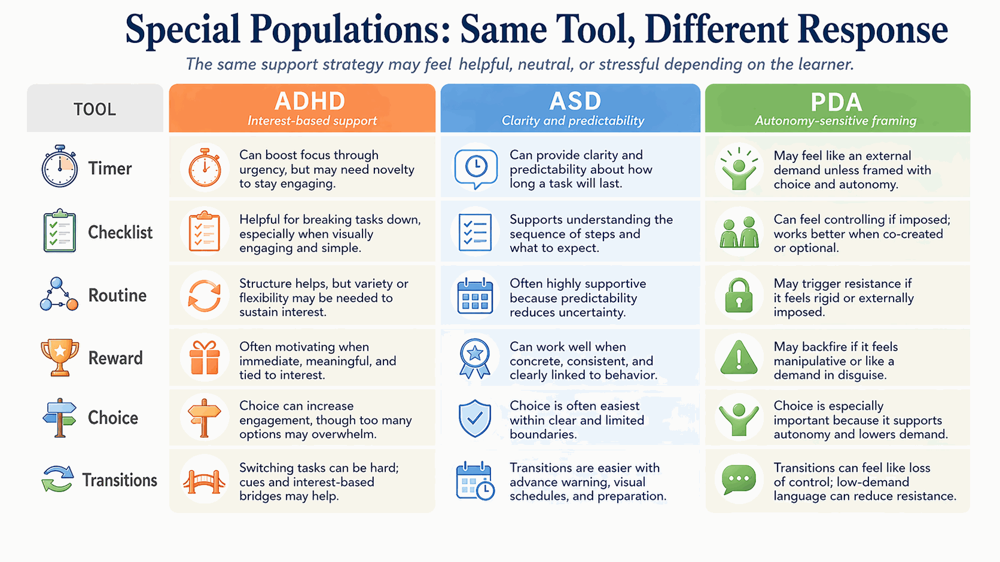
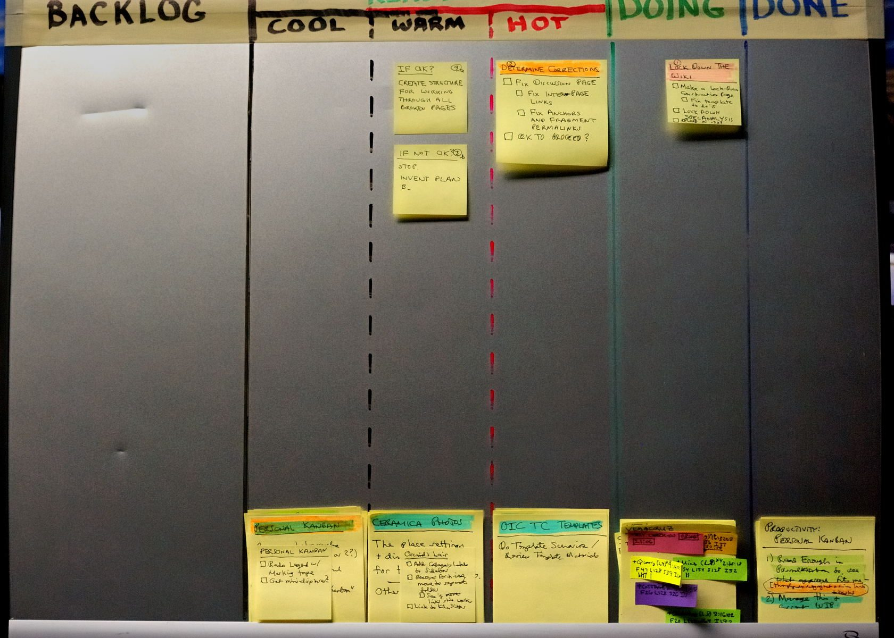

Strategic Interventions & Special Populations
The practitioner's toolkit: specific "how-to" strategies for remediating executive dysfunction, plus adaptations for ADHD, ASD, and critical life transitions.
Module Overview
This module constitutes the "toolkit" of the practitioner. It transitions from theory to the specific strategies for remediating executive dysfunction. The guiding philosophy is Environmental Engineering: changing the environment to modify behavior.

Time Management Across Populations
Population-Specific Barriers
Module 4 introduced time visualization tools and the prediction exercise. Here, the focus shifts to why the same tools fail for different populations and how coaches adapt temporal interventions accordingly.
Adaptations by Population
- Adolescents: Resistance to “childish” tools — use phone-native timers and app-based time blocking that feel age-appropriate
- College Students: Fluid schedules with no external bell system — teach weekly architecture reviews, not daily to-do lists
- Adults with Late Diagnosis: Deep shame around chronic lateness — reframe the Time Correction Factor as a calibration tool and a source of usable data
- Parents with EF Challenges: Competing temporal demands from children — build family-level visual schedules that serve the parent and child simultaneously
Example: The Prediction Exercise

| Task | Predicted | Actual | Factor |
|---|---|---|---|
| Shower | 10 min | 25 min | 2.5x |
| Pack bag | 5 min | 15 min | 3x |
| Write email | 10 min | 30 min | 3x |
| Math hw | 30 min | 60 min | 2x |
This data reveals a consistent pattern: the client underestimates by 2–3x. This becomes their personal "Time Correction Factor" for future planning.
Task Initiation: Overcoming the "Wall of Awful"
The Deficit
Procrastination is often an emotional regulation issue. The task has become associated with negative emotions (fear of failure, boredom), creating a "Wall of Awful" that must be climbed before the task can begin.
Micro-Tasking
Breaking a task down until it is "stupid small." Instead of "Write Essay," the task is "Open Laptop." Then, "Open Word Doc." These tiny tasks trigger less amygdala resistance because they feel non-threatening.
The Five-Minute Rule
Negotiating with the brain: "I will do this for only five minutes. If I want to stop after five minutes, I can." Usually, once the threshold of initiation is crossed, the client continues working.
Body Doubling
A social intervention where the client works in the presence of another person (the coach or a peer). Social presence and accountability structures can support initiation. Many clients, including those with ADHD, report body doubling as a useful strategy.
Organization & Working Memory: Offloading the Brain

The "Launch Pad"
A specific 2x2 foot square by the front door for all "leaving the house" items (keys, wallet, bag). The rule: items never live anywhere else.
External Checklists
Develop checklists for routine transitions ("Morning Routine," "End of Workday"). These must be posted at the "point of performance" — taped to the bathroom mirror or the door.
Cognitive Offloading
The rule of "Write it down immediately." Stop trusting the brain to hold appointments — immediately input them into a calendar or task manager.
Key Insight (Barkley)
For special populations, the gap between working memory capacity and environmental demand is often wider than standard coaching accounts for. A college freshman managing course schedules, social logistics, and medication timing simultaneously faces a higher cognitive load ceiling than most adult clients. Coaches must calibrate the volume and granularity of external supports to the population’s specific demand profile rather than apply a one-size-fits-all offloading template.
Emotional Regulation: The "Hard Times" Protocol
The Deficit
Emotional flooding that hijacks cognitive resources. When a client is emotionally dysregulated, their prefrontal cortex goes "offline" and no amount of planning strategies will work.
The "Hard Times" Board
A menu of pre-approved coping strategies created when the client is calm (e.g., "Drink water," "Walk the dog," "Listen to Playlist A"). When dysregulated, the client doesn't have to think of a solution — they just pick one from the menu.
Visualizing the Future Self
Guided imagery to help the client connect with how their "Future Self" will feel if the task is done vs. if it is ignored. This activates the "hot" emotional motivational circuits that drive action.
Special Populations & Transitions
EF coaching is rarely conducted in a vacuum — it almost always involves neurodivergent populations.
ADHD & ASD Nuances
The curriculum differentiates strategies for:
- ADHD: The "Interest-Based Nervous System" — motivation driven by novelty, urgency, and personal interest rather than importance
- ASD: Cognitive rigidity and difficulty with transitions; strategies must account for the need for predictability and routine
- Pathological Demand Avoidance (PDA): Negotiation strategies to lower threat responses rather than direct instruction
The Adult Transition
A critical focus on the "cliff" faced by high school graduates when scaffolding is abruptly removed:
- College Readiness: Self-advocacy, time management without parental support, managing large assignments
- Independent Living: Financial EF, household management, meal planning, self-care routines
- Workforce Transition: Workplace organization, meeting deadlines without external structure, professional communication
College and Higher Education
Students often lose scaffolding faster than their executive system can compensate. Coaches should understand disability offices, academic coaching, memory aids, and transition planning as part of the intervention landscape.
Family and Home Systems
Parents and caregivers frequently need tools as much as the learner does. Routines, shared language, visual supports, and reduced-friction handoffs can lower family conflict and increase follow-through.
Workplace and Adult Life
Adult executive dysfunction often shows up as deadline instability, email overload, poor transition management, and invisible self-care collapse. Workplace accommodations and environment design belong in the coaching toolkit.
Broader Lens
Executive dysfunction is shaped by context, privilege, institutional access, and environmental demand. Effective intervention planning accounts for neurotype and setting, but also for whether the client has usable supports in school, home, and work.
Family, School, and Workplace Support Guides
Module 5 Assignment
Assignment 5.1: The Intervention Design Project
Case Study: "Marcus is a 30-year-old software developer working from home. He is brilliant but constantly on the verge of being fired for missed deadlines. He works in a chaotic home office. He often forgets to eat lunch until 4 PM, then binges, crashes, and cannot finish his work. He stays up until 3 AM playing video games to 'wind down' and sleeps through his 9 AM stand-up meetings."
Task (2,500 words): Design a "Full-Stack" Intervention Plan:
- Physical Environment: Redesign his home office (lighting, clocks, desk organization)
- Bio-Regulation: Protocol for lunch/sleep issues using external cues
- Working Memory: System for tracking deadlines
- Task Initiation: "Startup Routine" for his workday to overcome inertia
Requirement: Use specific tools (Time Timer, Body Doubling, etc.) and justify each choice using the theoretical models from Module II.
Need Graded Review?
This preview assignment is free to read. Paid enrollment includes submission, rubric scoring, and documented feedback release through your dashboard.
Want Your Intervention Design Scored?
Module 5’s capstone assignment asks you to design a complete, population-specific intervention plan. The paid path includes evaluator review of your clinical reasoning, tool selection, and adaptation rationale.
See Credential Review Options